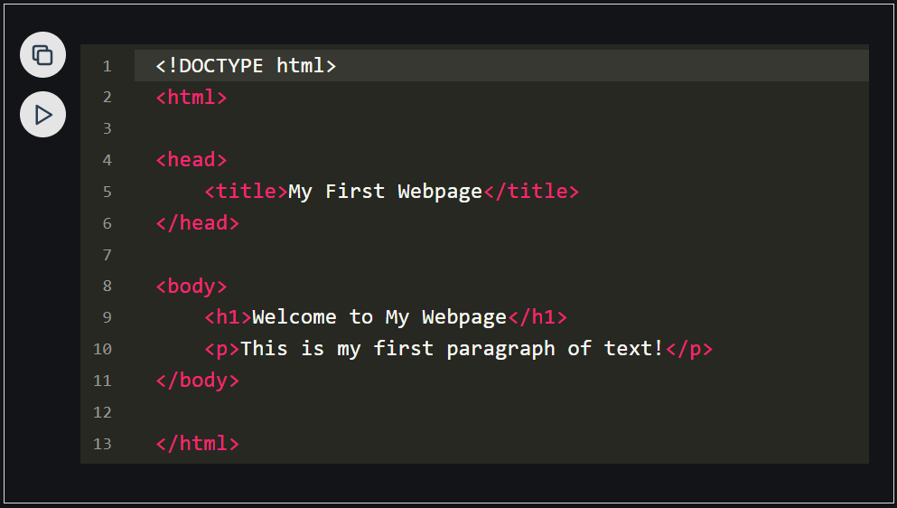
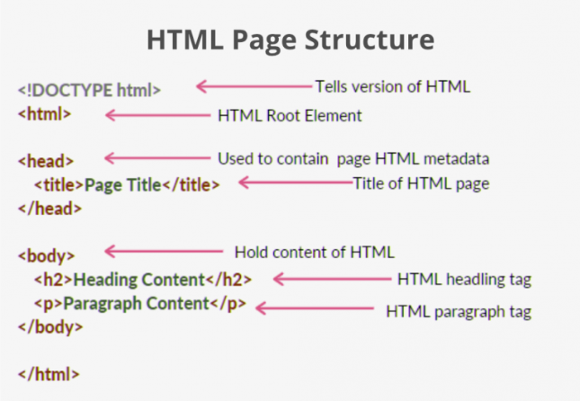
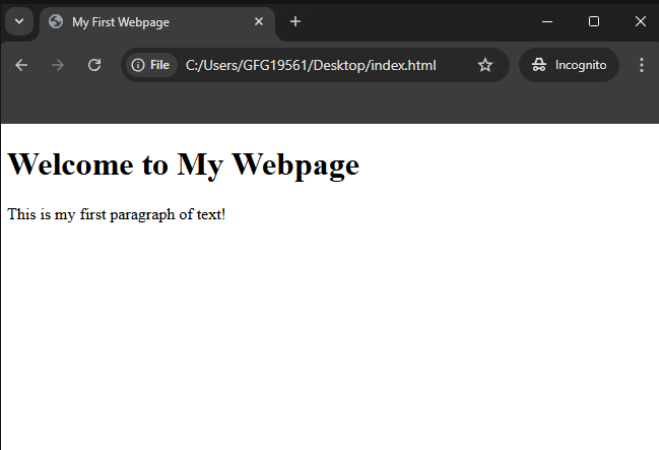
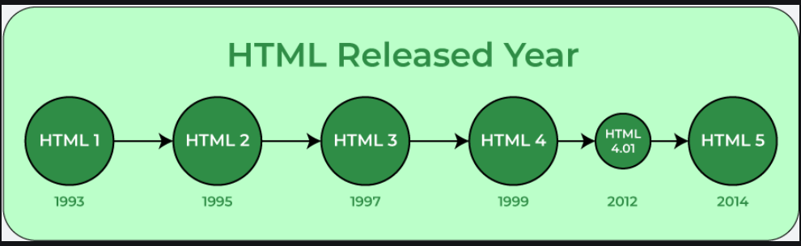

HTML TUTORIAL
Last Updated: 24 Dec,2024
HTML stands for HyperText Markup Language. It is the standard language used to create and structure
content on the web.
- HTML is a markup language, not a programming language, meaning it annotates text to define how it is
structured and displayed by web browsers.
- It forms the building blocks of all websites and is complemented by CSS for style and JavaScript for
interactivity.
In a nutshell, HTML is all about organizing and displaying information on a webpage. We can think of it
as the bones or structure of a webpage.
Basic HTML Code Example

Table Of Content
Why Learn HTML?
- Build Websites: HTML is the basic building block for creating any website. Learning HTML
can help you pursue a career in web development.
- Customize Content: Allows you to edit or tweak web pages, emails, or templates to fit your
needs.
- Understand how the web works: Helps you grasp how the internet works and how web pages are
structured.
- Employment Opportunities: According to Bureau of Labor Statistics projects that employment
for web developers will
grow 16% between 2022-2032, which is much faster than the average across all occupations.
- Learn Easily: HTML is beginner-friendly, making it a great first step into the world of
coding and technology
Features Of HTML
- It is easy to learn and easy to use.
- It is platform-independent.
- Images, videos, and audio can be added to a web page.
- Hypertext can be added to the text.
- It is a markup language.
HTML Element and HTML Tag
HTML Element and HTML Tags are related but distinct.
An HTML element is the complete structure, including the opening tag, content (if any), and the
closing tag (if applicable).
On the other hand, A tag is the actual keyword or name enclosed in angle brackets (<>) that
tells the browser
what kind of content to expect.

HTML Page Structure
The basic structure of an HTML page is shown below. It contains the essential building-block elements
(i.e. doctype declaration, HTML, head, title, and body elements) upon which all web pages are created.

-
<!Doctype html> - This is
the document type declaration, not a tag. It declares that the document is an HTML5 document.
-
<html> - This is called
the HTML root element. All other elements are contained within it.
-
<head> - The head tag contains the “behind the scenes” elements for a
webpage.
Elements within the head aren’t visible on the front end of a webpage. Typical elements inside the
<head> include:
-
<title>
: Defines the title displayed on the browser tab.
-
<meta>
:Provides information like the character set or viewport settings.
-
<Link>
:Links external stylesheets or resources.
-
<Style>
:Embeds internal CSS styles.
-
<Script>
:Embeds JavaScript for functionality.
-
<title>
: - The title is what is displayed on the top of your browser when you visit a website and
contains the title of the
webpage that you are viewing
-
<h2>
:The <h2> - tag is a second-level heading tag.
-
<p>
: - The <p> tag represents a paragraph of text.
-
<body>
:The body tag is used to enclose all the visible content of a webpage.
In other words, the body content is what the browser will show on the front end.
An HTML document can be created using an HTML text editor. Save the text file using the “.html” or “.htm”
extension.
Once saved as an HTML document, the file can be opened as a webpage in the browser.
Note: Basic/built-in text editors are Notepad (Windows) and TextEdit (MacOS).
Other advanced text editors include Sublime Text, Visual Studio Code, Froala, etc.
Web Browsers
Unlike other programming languages, HTML does not show output on the compiler.
web browsers show the results of an
HTML code.
It reads HTML files and determines how to show content with the help of HTML tags.
Any Web browser (Google, Safari, Mozilla Firefox, etc) can be used to open a . HTML file and view the results.

HTML History
Currently, we are using HTML5, which is the
latest and most advanced version of HTML.
HTML was initially created by Tim Berners-Lee in 1991 as a way to share and structure documents on the
web.
The first-ever version was HTML 1.0, a basic and limited version.However, the first standardized version,
HTML 2.0, was published in 1995, laying the foundation for web development as we know it today

Advantages Of HTML
- HTML is used to build websites.
- It is supported by all browsers.
- It can be integrated with other languages like CSS, JavaScript, etc.
Disadvantages Of HTML
-
HTML can only create static web pages. For dynamic web pages and logic, we need JavaScript.
-
A large amount of code has to be written to create a simple web page.
Conclusion
In conclusion, mastering HTML is a fundamental step in your web development journey. This guide serves as a
comprehensive resource
for understanding HTML, from the basics to more advanced topics. Remember, HTML is more than just a markup
language – it’s a
powerful tool for creating engaging, accessible, and SEO-friendly websites.